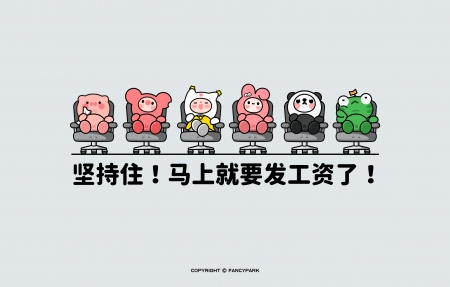

点击可跳转<<环境保护：我们的责任>>
点击跳转<<标题：人工智能的崛起和影响>>
点击跳转<<标题：现代科技对社会的影响>>
点击跳转<<标题：未来科技的影响>>
点击跳转<<标题：人工智能：现实与未来>>
环境保护：我们的责任 点击返回
在当今世界上，环境保护已经成为了全球关注的焦点。随着人类活动的不断增加，我们的地球面临着严重的环境问题。无论是空气污染、水资源短缺还是生物多样性的丧失，这些问题都呼唤着我们的行动。环境保护不仅是政府的责任，更是每一个个体都应该承担的责任。
长期以来，大量的工业排放和过度的资源开发已经引发了严重的空气污染问题。人们的健康受到威胁，呼吸道疾病不断增多。同时，地球的水资源也面临着巨大的压力。许多地区已经出现了水资源短缺的情况，人们为了获取清洁的饮用水而困扰。此外，由于不可持续的生产方式和人类对于自然环境的破坏，许多物种正面临着灭绝的危险。这些问题不仅仅是我们当前所面临的，更是我们子孙后代继承的负担。
我们每个人都应该意识到自己的责任并采取行动。在我们的日常生活中，我们可以从小事做起，例如减少塑料袋的使用、节约用水、积极参与垃圾分类等等。此外，我们还可以选择使用环保型产品，例如节能灯、太阳能设备等等，以减少能源的消耗和碳排放。同时，我们应该提倡可持续的生活方式，尽可能减少对自然资源的依赖，保护生态系统的平衡。
政府应加强环境保护法律的制定和执行，鼓励企业采取更加环保和可持续的经营理念，同时惩罚环境破坏行为。企业应该积极采取绿色生产方式，减少对环境的污染，加大对环保技术的研发和应用。政府和企业的努力与合作是环境保护的重要保障。
我们应该意识到我们所面临的环境问题的严峻性，行动起来，从个人做起。政府和企业也应该承担起自己的责任，加大投入，采取措施保护环境。只有通过共同的努力，我们才能为我们的地球营造一个更加美好、可持续的未来。
标题：人工智能的崛起和影响点击返回
标题：人工智能的崛起和影响
随着科技的不断进步，人工智能（AI）作为一项前沿技术正迅速发展，并对社会产生了广泛的影响。人工智能已经在各个领域展现出潜力，无论是在工业、医疗、金融还是日常生活中，都能看到它的身影。
首先，人工智能在工业领域中发挥着重要作用。自动化生产线、机器人技术和智能化物流管理正在改变制造业的面貌。通过使用人工智能，企业可以提高生产效率、降低人力成本，以及保证产品的质量和一致性。在未来，随着机器学习和自主决策能力的不断提升，工业智能化将会进一步推动生产效率的提高和创新的加速。
其次，人工智能在医疗领域也有巨大的潜力。智能诊断系统能够快速而准确地分析医学图像、肿瘤标记物等数据，帮助医生进行早期疾病诊断和治疗。此外，个性化医疗也因人工智能而得以实现。通过分析大量的患者数据和基因组信息，人工智能可以为患者提供个性化的诊断和治疗方案，提高治疗效果和患者体验。
在金融领域，人工智能技术正在推动智能投资、风险管理和金融安全。通过机器学习和大数据分析，AI可以预测市场趋势、优化投资组合，并帮助金融机构更好地管理风险。AI的自动化和智能化特性还能改进反欺诈系统，减少金融欺诈的发生。
此外，人工智能也已经走入了我们的日常生活。智能助手、语音识别和智能家居设备正越来越常见。通过与人工智能交互，我们可以使用语音命令来控制设备，处理日常任务，获取信息和娱乐。人工智能技术的不断发展还将进一步改善人们的生活质量，为我们提供更好的智能化体验。
然而，人工智能的发展也带来一些挑战和讨论。其中一个重要问题是人工智能的道德和隐私问题。人工智能系统如何处理个人数据和隐私保护的问题一直备受关注。同时，自主决策的人工智能系统可能会引发伦理和法律上的争议，需要建立相应的监管和约束机制。
总的来说，人工智能作为一项前沿技术，正深刻改变着我们的世界。它在工业、医疗、金融和日常生活中的广泛应用，为我们带来巨大的便利和效益。然而，我们也需要充分认识到其所带来的挑战，通过合理的监管和管理，确保人工智能的发展能够更好地造福人类。
这只是一个简短的文章示例，希望对您有所帮助！如果您需要更多的内容或其他主题，请随时告诉我。
标题：现代科技对社会的影响点击返回
标题：现代科技对社会的影响
随着科技的不断进步和应用，现代社会已经发生了翻天覆地的变化。科技的快速发展不仅改变了人们的生活方式，还对社会产生了深远的影响。本文将探讨现代科技对社会的影响，并对其带来的利与弊进行分析。
首先，现代科技对社会的影响可见于各个领域。在通信方面，智能手机和互联网的普及使得信息传递变得更加迅速和便捷。人们可以通过社交媒体平台和即时通讯应用与世界各地的人交流，拉近了人与人之间的距离。此外，医疗领域也因科技而得到极大改善。医疗设备的创新和远程医疗技术的发展使得病患可以在家中接受专业的医疗服务，极大地提高了医疗的效率和便利性。
然而，科技的发展也带来了一些负面影响。首先是对人类就业的影响。自动化和人工智能技术的进步使得许多传统的劳动岗位面临被取代的风险。机器人和自动化系统在工厂和服务行业中的应用，使得部分劳动力面临失业的风险。其次，科技的发展也引发了隐私和安全的问题。数据泄露、网络攻击和信息滥用等问题日益突出，需要加强相关法律法规和技术手段来保护个人和机构的利益。
此外，现代科技对教育行业也带来了深远的影响。互联网和数字技术的普及使得在线教育成为可能。人们不再需要传统的课堂教学，可以通过在线课程和学习平台获取知识。这种教育方式的灵活性和便利性为广大学生提供了更多的选择和机会。然而，对于一些贫困地区和资源匮乏的群体来说，数字鸿沟的存在可能会加剧教育不平等问题。
总而言之，现代科技深刻地改变了社会。它为人类带来了许多便利和机遇，提高了生活质量和生产力。然而，科技的发展也带来了一些挑战和问题，对劳动市场、个人隐私和教育产生了深远影响。因此，我们需要在利用科技的同时，认识到其局限性，并采取适当的措施来最大程度地发挥科技的正面影响，同时解决其所带来的问题。
未来科技的影响点击返回
未来科技的影响
科技的快速发展正在以惊人的速度改变着我们的生活。无论是通信技术、人工智能、生物技术还是可再生能源，这些科技的突破都将对未来产生巨大的影响。让我们一起展望未来，并探讨一些科技领域可能对我们的社会、经济和环境带来的影响。
首先，通信技术的进步将进一步缩小世界的距离。随着5G、6G网络的发展，全球高速互联将更加普及，传输速度将更加快速稳定。这将使人们更容易进行远程工作、远程学习和远程医疗，打破地域限制，提升工作效率和学习质量。同时，互联网的普及还将带来全球数字化进程的加速，推动电子商务、虚拟现实和数字娱乐等产业的快速发展。
其次，人工智能的广泛应用将深刻改变各行各业。机器学习、自然语言处理和计算机视觉等技术的突破，将使机器能够进行复杂的认知和决策，从而实现自动化和智能化。例如，在医疗领域，大数据分析和人工智能算法可以帮助医生更准确地诊断疾病和制定个体化的治疗方案。在交通领域，自动驾驶技术的普及将提高交通安全性和效率。然而，人工智能的发展也需要谨慎对待，严格控制其伦理和隐私风险，确保科技的发展符合人类的利益和价值观。
另外，生物技术的突破将在医学、农业和环境保护方面发挥重要作用。基因编辑技术的进步有望治愈一些不治之症，并解决遗传疾病的挑战。通过基因改良作物，我们可以提高农作物产量和抗病虫害能力，缓解粮食危机并保护生态环境。生物技术的应用还可以培育出可再生能源生物燃料，减少对化石能源的依赖，推动可持续发展。
最后，可再生能源的广泛应用将重塑能源行业和环境格局。太阳能、风能、水能等可再生能源将逐渐取代传统的化石能源，降低温室气体排放，应对气候变化。同时，能源分布和去中心化的趋势将减少对中心化能源系统的依赖，提高能源的安全性和可靠性。这将带动新能源技术的发展和能源市场的多元化。
综上所述，未来科技的影响无疑是巨大而深远的。通信技术的进步将带来全球互联，人工智能的广泛应用将改变各行各业，生物技术的突破将带来医疗、农业和环境的变革，可再生能源的发展将塑造新的能源格局。这些科技的突破将为我们的社会、经济和环境带来许多机会和挑战，我们需要睿智地应对和引导这些变革，以确保科技的发展能够造福人类，实现可持续发展的目标。
标题：人工智能：现实与未来点击返回

标题：人工智能：现实与未来
人工智能（AI）是一项引人注目的技术领域，正在快速改变我们的世界。随着计算能力的增强和大数据的普及，AI正逐渐渗透到我们的日常生活中。本文将探讨人工智能的现实应用和未来发展。
在当今社会，人工智能已经在各个领域找到了应用。在医疗行业，AI可以帮助医生进行快速、准确的诊断，并辅助手术操作。AI技术还被应用于智能助理，如语音识别和自动翻译，使得我们可以更自然地与计算机进行交互。在交通运输领域，AI驱动的自动驾驶技术已经开始改变我们的交通方式，提高了道路安全性和效率。此外，在金融、零售和制造业等领域，AI正在创造更智能化的业务模式和流程，提高生产效率和客户体验。
尽管人工智能已经取得了巨大的进展，但它仍然面临着一些挑战和争议。一个主要的问题是人们对于AI技术的担忧，包括就业岗位的减少和个人隐私的威胁。然而，我们应该认识到，AI并不是取代人类的工具，而是为我们提供更好的决策支持和工作效率。同时，我们也必须确保AI的使用符合道德和法律的原则，保护个人信息和隐私。
展望未来，人工智能有着巨大的发展潜力。随着技术的进步，AI将能够更好地理解和模拟人类的智能，并具备更强大的学习和推理能力。这将为医疗诊断、科学研究、环境保护和社会管理等领域带来重大的进展。人们预测，未来的AI将能够开发出创造性的解决方案，甚至在科学研究和艺术创作方面发挥重要作用。
然而，随着AI的发展，我们也需要关注潜在的风险和伦理问题。机器学习算法的不透明性和对数据依赖性可能导致潜在的偏见和不公正。因此，我们需要制定相应的准则和监管机制，确保AI的发展与社会的利益相一致。
总的来说，人工智能是一项具有巨大潜力和挑战的技术。它已经在各个领域展示了巨大的影响力，并将继续在未来发挥重要作用。我们需要明智地应用AI，充分认识到其优势和局限性，同时确保其发展符合道德和社会价值的原则。